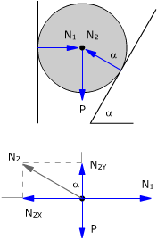
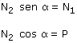
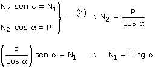
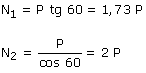

Fuerzas

Los ángulos α son iguales por lados perpendiculares
Equilibrio de traslación:

Las normales N1, N2 se pueden deslizar hasta el c.d.m de la bola y entonces el momento resultante será cero. El cuerpo no puede tener rotación
Para que la bola esté en equilibrio bastará con que esté en equilibrio de traslación:

Sustituyendo valores:
